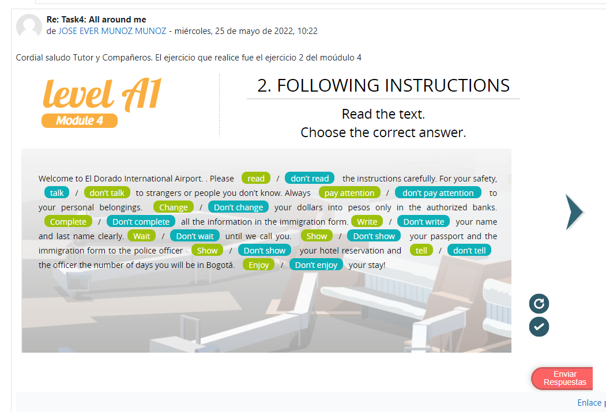

Stage 1


El guión que elegí en el Stage 3 fue el Guión 1: Monserrat : It is 3.152 meters above sea level. At the very top, there is a big church where people go to pray especially on Sundays, so if you want to avoid crowds try to visit on regular days during the week. You can go to the top with a funicular or cable car, you can buy tickets online or once you arrive to the station. Here at the top, you can find many restaurants, many souvenir shops, so if you're hungry thirsty or if you need to buy some souvenirs you can find everything here. Puede acceder a mi grabación haciendo click aquí: https://voca.ro/1afy15ZPQQQv
Elegí realizar un video para verlo hacer clic en el link: https://youtu.be/TnkJZ5qFb-M
D. Autoevaluación y Reflexión Personal
• ¿Estudié y aprendí los temas sugeridos del e-Book?
Si
• ¿Participé en el foro dentro de los tiempos indicados?
Si
• ¿Preparé y dediqué suficiente tiempo para realizar una buena presentación oral en el video y/o
en la entrevista?
Si
• ¿Qué aprendí de esta tarea?
Aprendí mucho vocabulario, la mayoría de los ejercicios me recordaron los tiempos gramaticales de la escuela que ya
tenía un poco olvidados, me sirvieron de repaso.
• ¿Cómo aporta este aprendizaje a mi vida personal y profesional?
El inglés es la lengua más importante que aprender, es el idioma que nos abre las puertas al
mundo, a todo el globo de
la tierra, es utilizado internacionalmente, las grandes economías, las grandes empresas, todas
ellas usan inglés, el
inglés nos permite el intercambio de ideas, conocimientos e información, podremos comunicarnos
fácilmente con
profesionales de otros países, y el trabajo es mejor pagado cuando uno sabe hablar inglés.
Mi calificación es de 10 puntos